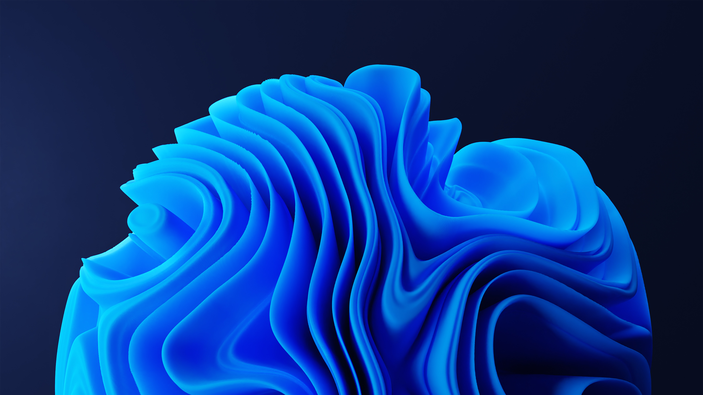
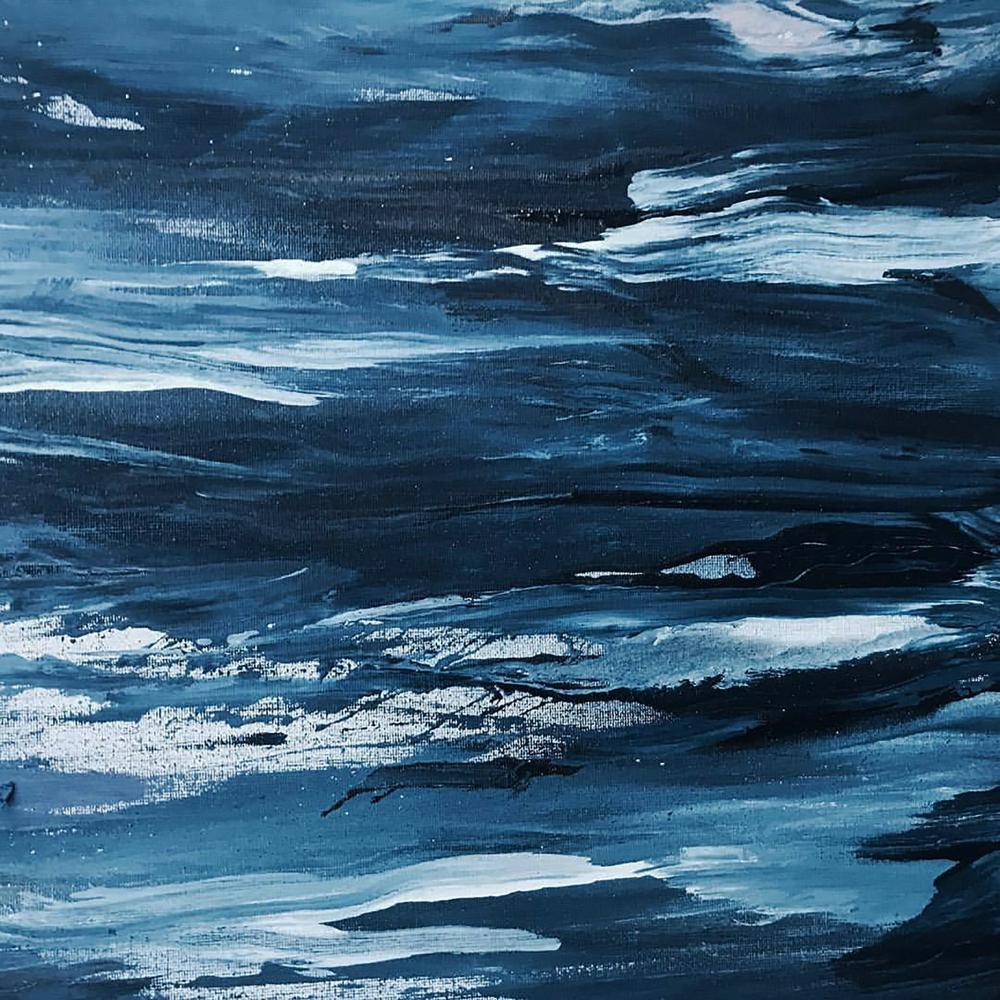

All about texture images
An image texture is a set of metrics calculated in image processing designed to quantify the perceived texture of an image

Some texture images

Image textures can be artificially created or found in natural scenes captured in an image.

Image textures are one way that can be used to help in segmentation or classification of images.

For more accurate segmentation the most useful features are spatial frequency and an average grey level.

To analyze an image texture in computer graphics, there are two ways to approach the issue: Structured Approach and Statistical Approach.
A structured approach sees an image texture as a set of primitive texels in some regular or repeated pattern. This works well when analyzing artificial textures.
To obtain a structured description a characterization of the spatial relationship of the texels is gathered by using Voronoi tessellation of the texels.
Call to action! It's time!
Sign up for our product by clicking that button right over there!